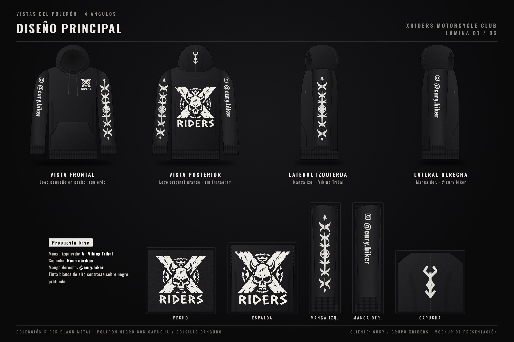
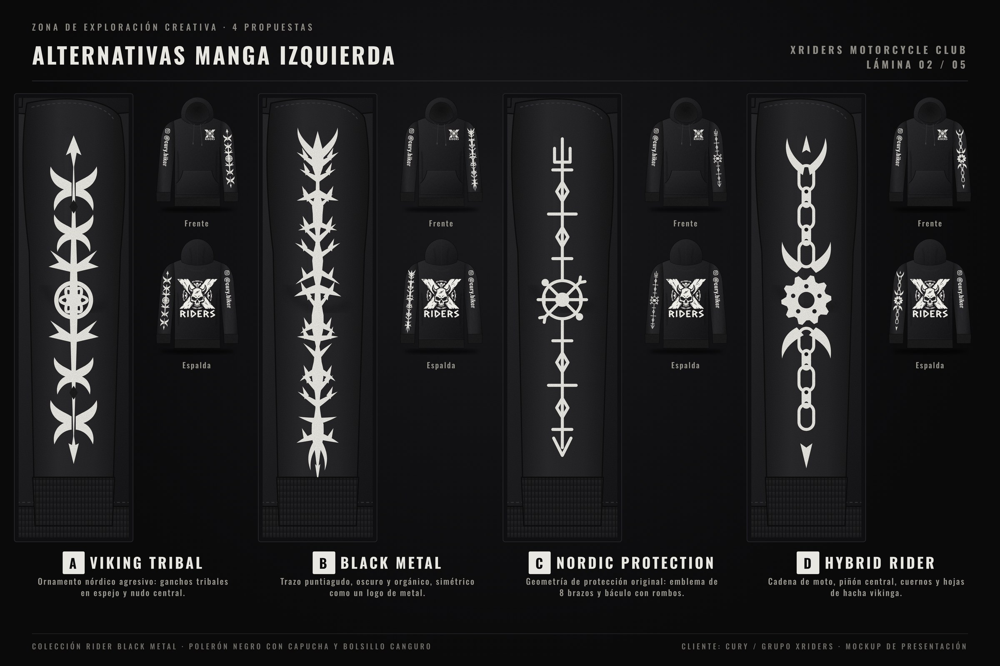
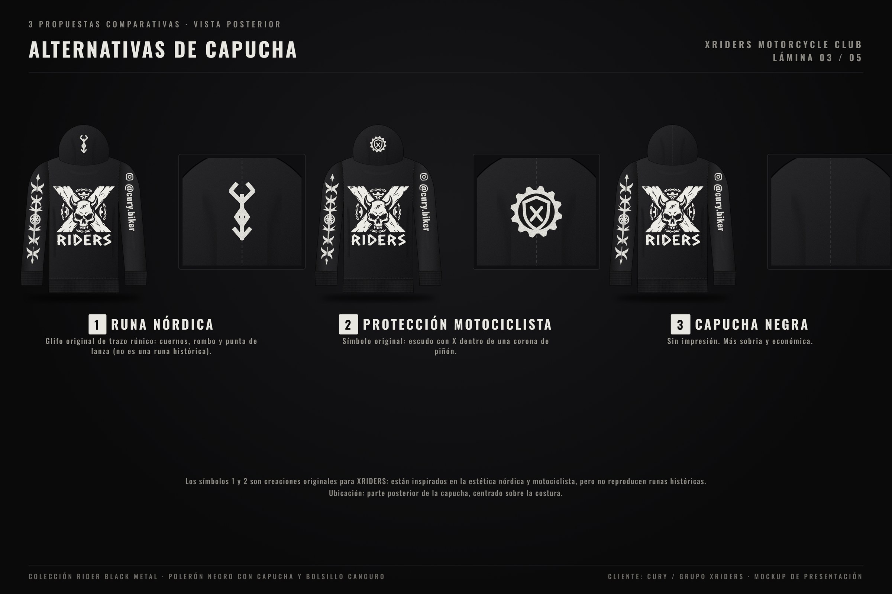
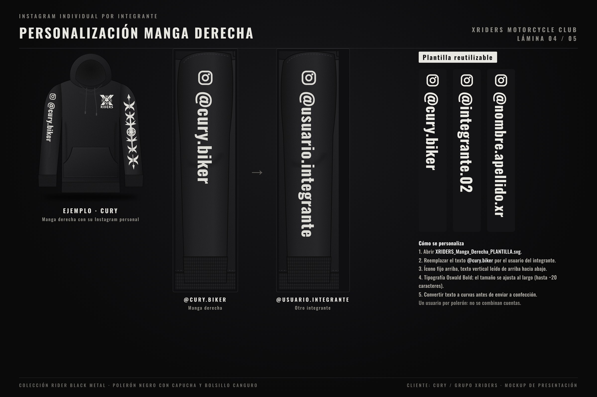
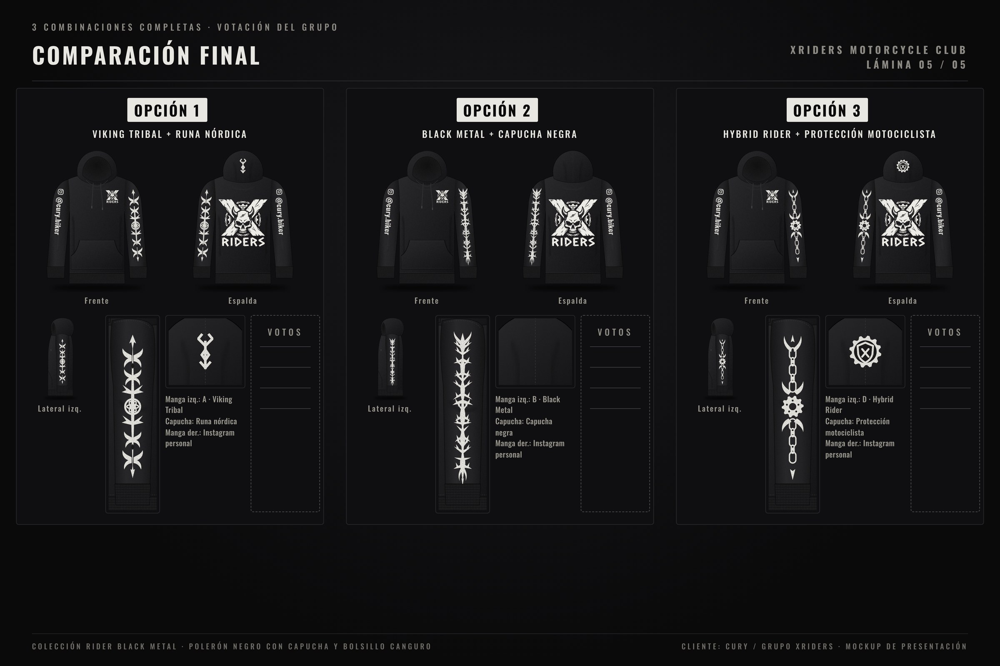

Cliente: Cury / Grupo XRIDERS · Colección Rider Black Metal
XRIDERS · Mockups polerón
01 Principal
02 Manga izq.
03 Capucha
04 Instagram
05 Votación

Lámina 01
· Diseño principal

Lámina 02
· Alternativas manga izquierda A · B · C · D

Lámina 03
· Alternativas de capucha

Lámina 04
· Personalización manga derecha

Lámina 05
· Comparación final para votar